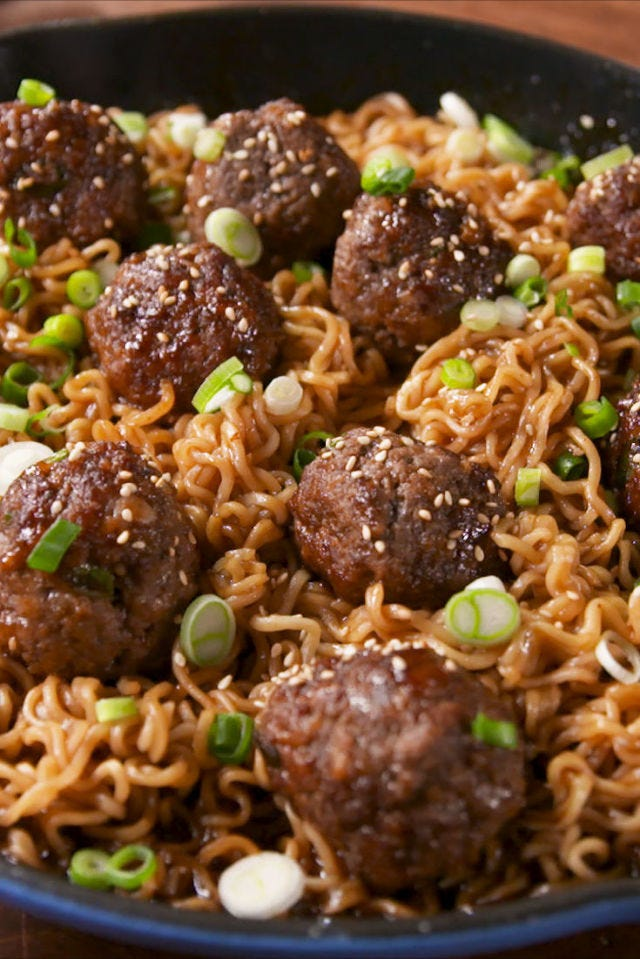

Mongolian Ramen

Turn that instant ramen into a real meal.
Ingredients
- 1 lb. ground beef
- 1/2 c. panko bread crumbs
- 3 green onions, thinly sliced, divided
- 1 egg
- 2 cloves garlic, minced
- 2 tsp. sesame oil, divided
- red pepper flakes
- kosher salt
- Freshly ground black pepper
- Vegetable oil, for skillet
- 2 tsp. minced ginger
- 3/4 c. low sodium chicken broth
- 1/2 c. low sodium soy sauce
- 1/4 c. brown sugar
- 2 tbsp. hoisin
- 3 packs instant ramen
- Sesame seeds, for garnish
Directions
- In a large bowl, combine ground beef, panko bread crumbs, about half green onions, egg, garlic, and 1 teaspoon sesame oil. Season with red pepper flakes, salt and pepper, then mix until well combined. To form meatballs, scoop a heaping tablespoons of mixture and roll into balls.
- In a large skillet over medium-high heat, heat a thin layer of vegetable oil. Add meatballs and sear until each sides develops a crust, about 2 minutes per side.
- Remove meatballs from skillet, and add remaining sesame oil. Stir in ginger and cook until fragrant, about 30 seconds. Add chicken broth, soy sauce, brown sugar, and hoisin. Stir to combine and bring to a simmer. Return meatballs to skillet and cover skillet with a lid. Cook until meatballs are cooked through, about 10 minutes more.
- Meanwhile, cook ramen. In a large pot of boiling water, cooking ramen according to package instructions. Drain noodles.
- Add cooked noodles to skillet and toss until fully coated in sauce. Garnish with remaining green onion and sesame seeds. Serve warm.